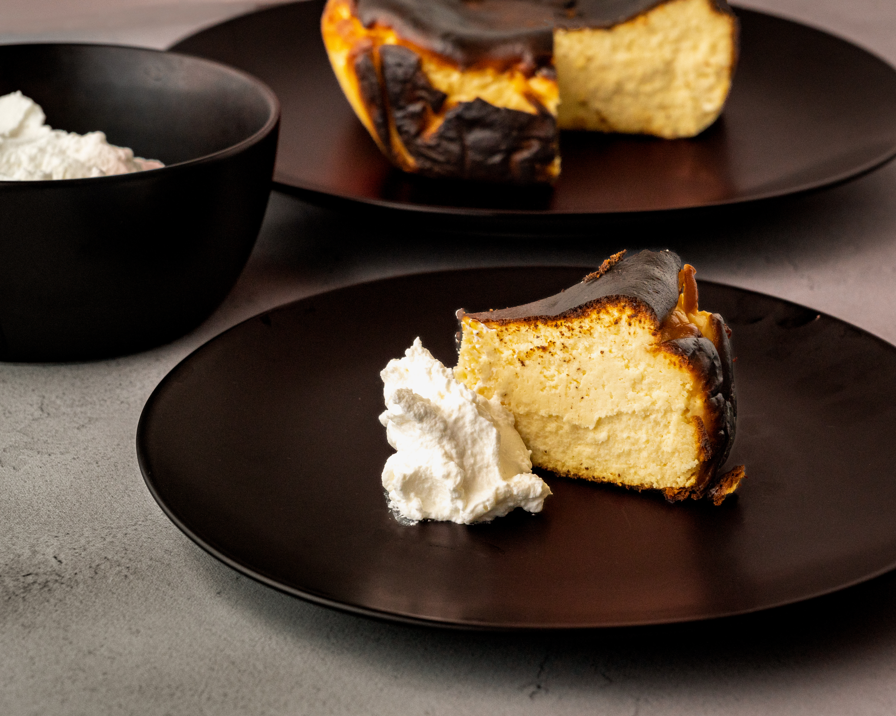

Basque Cheesecake Recipe

Description
Cheesecake is a delicious and creamy dessert made with soft cheese, sugar, and eggs. Cheesecake is a popular dessert enjoyed all around the world. There are many different types of cheesecake. Some popular ones are New York Cheesecake, Japanese Cheesecake, No-Bake Cheesecake, and Basque Cheesecake.
For our recipe, we are making Basque Cheesecake!
Ingredients
- Cream cheese at room temperature (450g)
- Sugar (150g)
- 3 eggs
- Cornstarch (15g)
- Vanilla bean paste
- Heavy cream (180ml)
Steps
- Preheat the oven to 240°C. Line a 15 cm cake pan with parchment paper, making sure the paper covers the sides.
- Add the cream cheese and sugar to a stand mixer. Beat on medium speed for about 3 minutes, until the mixture is smooth.
- Add the eggs and mix.
- Sift in the cornstarch and add the vanilla bean paste. Mix for another 2 minutes until smooth.
- Reduce the mixer speed and slowly pour in the heavy cream. Mix for about 1 minute, until everything is well combined.
- Pour the cheesecake batter into the prepared pan
- Bake for approximately 25 minutes, until the top is dark brown and the center is still soft and slightly jiggly.
- Let the cheesecake cool inside the oven for 10 minutes.
- Remove the cheesecake from the oven, cover it, and refrigerate for at least 4 hours, preferably overnight.
- Once chilled, slice and enjoy your creamy Basque Cheesecake!